スライド資料はこちらから
DB設計
概要
- データベース設計について学びます。
- テーブル設計の手法や考え方を学習します。
データベース設計
データベースには「テーブル」「インデックス」「ストアドプロシージャ」などの要素があります。
データベースを有効に活用するためにはデータベースの設計が重要です。
データを矛盾なく効率よく保持するためには、テーブル設計が重要になります。
SQLの実行速度を最適化するにはインデックスの設計が重要です。
DBと連携するプログラムの負担を減らすには、ストアドプロシージャやトリガーなどをうまく活用することが重要です。
このテキストでは主にデータベース設計の中でも最も重要となるテーブル設計について学習します。
テーブル設計
単にデータを保存するだけであれば、データベースではなく、ファイルに保存する方法もあります。
データベースを使う利点は、「管理のしやすさ」と「検索のしやすさ」です。
しかし「管理のしやすさ」を達成するためには、データベースの使い方をしっかりと考慮する必要があります。
そのため、「設計」をすることが必要です。
適切にデータを管理していないデータベースは、パフォーマンス（性能）の低下につながります。
パフォーマンスの低下はサービスの質の低下につながりますので、データベースはプロジェクトに合わせて正しく設計することが重要です。
テーブルの設計は以下の手順で行います
- 必要なデータの洗い出し
- データの正規化
- データ型の決定
- テーブル定義書の作成
必要なデータの洗い出し
データの洗い出しは主に2種類あります。
1. 管理するデータの洗い出し
- 実際に存在するデータ
2. 管理に必要なデータの洗い出し
- 実際には存在しないデータ
- 管理に必要なデータとして、IDや管理番号という形で新しいデータを加えることもあります
管理するデータは要件によって異なりますが、どのような要件であっても、必要なデータの洗い出しは必ず行います。
例として、下記の名刺から人物のデータを洗い出します。
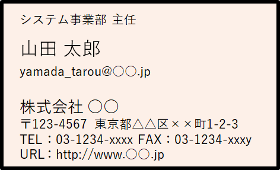
管理したいデータとして以下のようなデータがあげられます。
- 「山田 太郎」という名前
- 「株式会社○○」という会社名
など 文字の大きさや、フォントの種類などは人物のデータではないため、不要なデータと判断しています。
続いて、洗い出したデータを整理するためにデータのカテゴリを考えます。
例えば、「システム事業部」というデータは{所属部署}というカテゴリに分類できます。
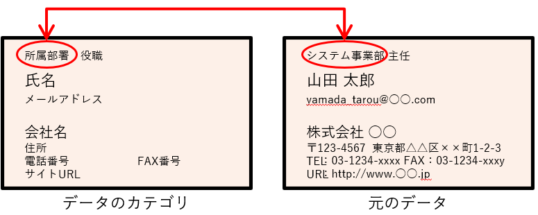
整理すると、管理したいデータ以下のようになります。
| データのカテゴリ | 元のデータ |
|---|---|
| 所属部門 | システム事業部 |
| 役職 | 主任 |
| 指名 | 山田太郎 |
| メールアドレス | yamada_tarou@○○.com |
| 会社名 | 株式会社 ○○ |
| 住所 | 〒123-4567 東京都△△区××町1-2-3 |
| 電話番号 | 03-1234-xxxx |
| FAX番号 | 03-1234-xxxy |
| サイトURL | http://www.○○.jp |
データベースに登録する際、このままだとデータを適切に管理できない可能性があります。
管理に必要なデータを洗い出していないためです。
複雑になり過ぎないように{会社名, 所属部署, 氏名}だけで考えていきます。
例えば、同じ会社の同じ部署に同姓同名の「山田 太郎」さんが所属している場合を考えます。
| 会社名 | 所属部署 | 指名 |
|---|---|---|
| 株式会社 ○○ | システム事業部 | 山田 太郎 |
| 株式会社 ○○ | システム事業部 | 山田 太郎 |
二人の「山田 太郎」さんのうち一人だけ部署を異動することになった場合、データベースのデータも変更しなければなりません。 しかし、全てのデータが一致してるため、どちらが部署を異動する「山田 太郎」さんか判断できません。
この問題を解決する方法のひとつとして、「{氏名}には他の行と重複するデータを登録できない」という条件を考えます。
そうすれば、{氏名} をもとに対応する1行を特定でき、区別がつかなくなることはありません。
しかし、世の中には同姓同名の人物はいないとは限りません。
そのため、データベースとして「{氏名}には他の行と重複するデータを登録できない」という設計は適切ではないと考えられます。
そこで管理に必要なデータとして、{登録ID}という名前の列を追加します。
{登録ID}は行を特定できるようしたいので、「001」から始まり、データが登録される度に「002」、「003」と1ずつ増えていくデータとします。
| 登録ID | 会社名 | 所属部署 | 指名 |
|---|---|---|---|
| 001 | 株式会社 ○○ | システム事業部 | 山田 太郎 |
| 002 | 株式会社 ○○ | システム事業部 | 山田 太郎 |
{登録ID}は1ずつ増えていくという性質上、重複しません。
こうすることで、それぞれの行を区別することができるようになります。
{登録ID}のように、1行のみを特定できる列、または列の組み合わせを候補キーと呼びます。
データベースを設計する際は、候補キーの中から「使いやすい候補キー」を一つ選んで主キーに設定します。
候補キーでも主キーでもない列は非キーと呼ばれます。
先ほどのデータでは{登録ID}以外の列は重複する可能性があり非キーとなりますので{登録ID}を主キーに設定します。
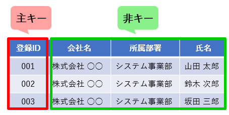
候補キーについて詳しく見ていきます。
先ほどの例に「株式会社○○ の1番目の社員、株式会社○○ の2番目の社員、株式会社○○ の3番目の社員、株式会社 ××の1番目…」となるような、{社員番号}を追加して考えます。
| 登録ID | 会社名 | 社員番号 | 所属部署 | 指名 |
|---|---|---|---|---|
| 101 | 株式会社 ○○ | 1 | システム事業部 | 山田太郎 |
| 102 | 株式会社 ○○ | 2 | システム事業部 | 鈴木次郎 |
| 103 | 株式会社 ○○ | 3 | 営業部 | 坂田三郎 |
| 104 | 株式会社 ×× | 1 | システム事業部 | 井上四郎 |
「株式会社 ○○」の1番目は必ず一人だけになります。
そのため、{登録ID}も候補キーになりますが、それ以外にも{会社名, 社員番号}の組み合わせも候補キーとなります。
この場合、主キーはこの二つの候補キーから選ぶことになります。
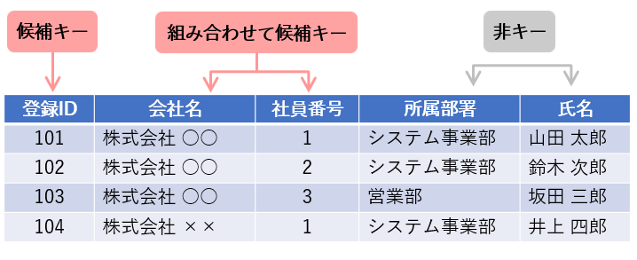
正規化
正規化とは
正規化とは以下の目的のために、データを一定のルールに従って整理することです。
- 重複の排除
- データの整合性を保つ
例えば下記のような、学生情報を保持するテーブルA(氏名, 学部ID, 学部名)と、テーブルB(学部ID, 学部名) があったとします。
{学部ID}は各学部に一つずつ割り振られているデータです。
テーブルA
| 指名 | 学部ID | 学部名 |
|---|---|---|
| 山田太郎 | 201 | 法学部 |
| 鈴木次郎 | 202 | 理工学部 |
| 坂田三郎 | 203 | 商学部 |
テーブルB
| 学部ID | 学部名 |
|---|---|
| 201 | 法学部 |
| 202 | 理工学部 |
| 203 | 経済学部 |
{学部ID}が203のデータを確認すると、テーブルAでは「商学部」、テーブルBでは「経済学部」となっており一致していません。
このようにあるテーブルに登録されているデータが他のテーブルでは別のデータとなっている状態が、「整合性が保たれていない」状態です。
整合性が保たれていないデータは、どちらのデータが正しいか判断できず、無意味なデータとなります。
このような不整合を発生させないために正規化を行う必要があります。
まずは正規化を行ううえで必要となる、関数従属について見ていきます。
関数従属
従属とは「他のものに付き従う」ことです。
関数従属している状態とは、「ある値から別の値も特定できる」という状態です。
先ほどのデータでは、{登録ID}を候補キーに設定しました。
このとき{登録ID}から{所属部署}、{氏名}、{会社名}が特定できます。
つまり、{会社名}と{所属部署}と{氏名}は{登録ID}に関数従属している状態です。
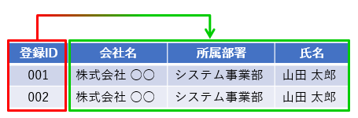
完全関数従属
以下のテーブルは、{講座番号, 出席番号}の組み合わせを候補キーと設定してます。
{生徒氏名}は{講座番号, 出席番号}から特定できます。
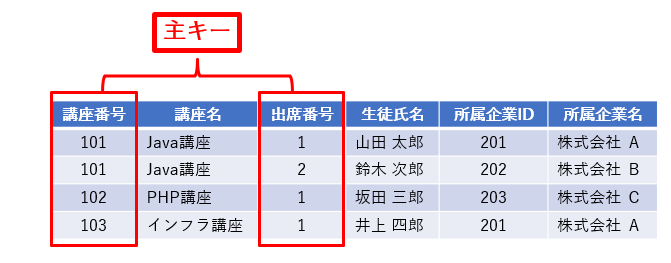
つまり{生徒氏名}は{講座番号, 出席番号}に従属している状態です。
候補キーの全ての列に従属している状態を完全関数従属といいます。
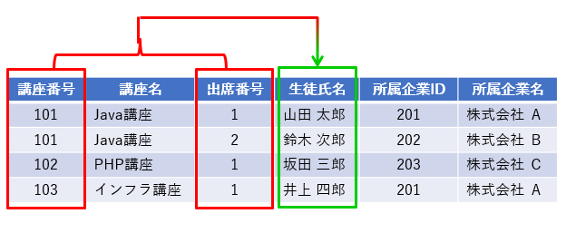
部分関数従属
先ほどのデータでは{講座番号, 出席番号}から1行が特定できます。
その中で{講座番号}は講座ひとつひとつに割り振られているデータです。
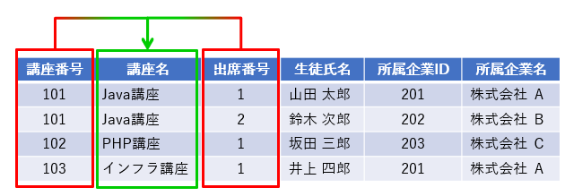
つまり{講座名}は候補キーである{講座番号, 出席番号}のうち{講座番号}のみに従属している状態です。
このように候補キーの一部に従属している状態を部分関数従属といいます。
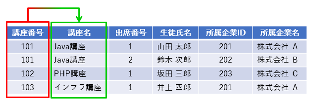
推移関数従属
{所属企業ID} は企業ひとつひとつに割り振られているデータです。
つまり{所属企業名}は{所属企業ID}に従属しています。
また{所属企業ID}は候補キーである{講座番号, 出席番号}に従属しています。
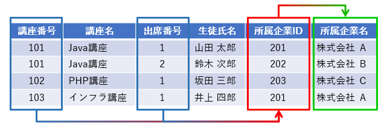
つまり{講座番号, 出席番号}から{所属企業ID}が特定され、{所属企業ID}から{所属企業名}が特定されます。
このように推移的に候補キーに従属している状態を推移関数従属といいます。
正規化
正規化は段階を追って進めていきます。
その段階によって（整理された形によって）呼び方が決まっています
その段階ごとの、第1正規形、第2正規形、第3正規形について確認していきます
- 第1正規形
- 繰り返し項目がなく、管理するデータが値のみの状態
- 繰り返し項目を分解し、別々の行に分けるという手順を踏む
- 第2正規形
- 第1正規形でかつ全ての非キー属性が、全ての候補キーに完全関数従属している状態
- 第1正規形の状態から部分関数従属しているキーを分離するという手順を踏む
- 第3正規形
- 第2正規形でかつ全ての非キー属性が、全ての候補キーに非推移的に関数従属している状態
- 第2正規形の状態から推移関数従属しているキーを分離するという手順を踏む
非正規系
以下のテーブルは、非正規形になっています。
生徒指名、所属企業名が繰り返し項目になっています。
明らかにデータの不整合が起きそう、かつ、管理しにくい構造になっています。
| 講座番号 | 講座名 | 生徒指名 | 所属企業名 |
|---|---|---|---|
| 101 | Java講座 | 山田太郎、鈴木次郎 | 株式会社A、株式会社B |
| 102 | PHP講座 | 坂田三郎 | 株式会社C |
| 103 | インフラ講座 | 山田太郎、坂田三郎、井上四郎 | 株式会社A、株式会社B、株式会社C |
繰り返し構造のデータを排除することが第一正規化になります。
第一正規化された形のデータを、第一正規形と呼びます。
第一正規化
第一正規化された形は以下のようになります。
主キーは講座番号と出席番号になります。
| 講座番号 | 講座名 | 出席番号 | 生徒指名 | 所属企業ID | 所属企業名 |
|---|---|---|---|---|---|
| 101 | Java講座 | 1 | 山田太郎 | 201 | 株式会社A |
| 101 | Java講座 | 2 | 鈴木次郎 | 202 | 株式会社B |
| 102 | PHP講座 | 3 | 坂田三郎 | 203 | 株式会社C |
| 103 | インフラ講座 | 4 | 井上四郎 | 203 | 株式会社A |
| 103 | インフラ講座 | 3 | 坂口三郎 | 203 | 株式会社C |
| 103 | インフラ講座 | 1 | 山田太郎 | 201 | 株式会社A |
第一正規系には以下のような問題があります。
- 新しい講座情報を登録するとき、生徒がいなければ登録できない
- 会社情報だけを登録することができない
- 会社情報の更新の際に漏れがあると不整合が起きる可能性がある
- 講座情報の更新の際に漏れがあると不整合が起きる可能性がある
これらの問題を解決するために、続いて第二正規化を行う必要があります。
第二正規化では、部分関数従属している部分を切り出します。
主キーは講座番号と出席番号なので、講座名と生徒指名が部分関数従属していることが分かります。
第二正規化
第二正規形は以下になります。
講座
| 講座番号 | 講座名 |
|---|---|
| 101 | Java講座 |
| 102 | PHP講座 |
| 103 | インフラ講座 |
生徒
| 出席番号 | 名前 | 所属企業ID | 所属企業名 |
|---|---|---|---|
| 1 | 山田太郎 | 201 | 株式会社A |
| 2 | 鈴木次郎 | 202 | 株式会社B |
| 3 | 坂田三郎 | 203 | 株式会社C |
| 4 | 井上四郎 | 201 | 株式会社A |
受講講座
| 講座番号 | 出席番号 |
|---|---|
| 101 | 1 |
| 101 | 2 |
| 102 | 1 |
| 103 | 1 |
| 103 | 3 |
| 103 | 4 |
第二正規化によってテーブルが3つに分かれました。
講座に関しては独立して新しくデータを登録したり、修正が発生しても不整合が起きないようになりました。
しかし、まだ以下の問題があります。
- 所属企業を単独で新しく追加できない
- 株式会社Aの名前を修正した際、片方だけ修正してしまうと、不整合が発生する
この問題を解決するために、第三正規化を行います。
第三正規化では、推移関数従属を排除します。
ここでは生徒のテーブルで、所属企業名が推移関数従属しています。
（生徒テーブルの主キーは出席番号だが、所属企業名は所属企業IDに関数従属しているため）
第三正規化
生徒テーブルを第三正規化すると以下のようになります。
生徒
| 出席番号 | 名前 | 所属企業ID |
|---|---|---|
| 1 | 山田太郎 | 201 |
| 2 | 鈴木次郎 | 202 |
| 3 | 坂田三郎 | 203 |
| 4 | 井上四郎 | 201 |
企業
| 所属企業ID | 所属企業名 |
|---|---|
| 201 | 株式会社A |
| 202 | 株式会社B |
| 203 | 株式会社C |
最終的に全体としては以下の４つのテーブルになります。
講座
| 講座番号 | 講座名 |
|---|---|
| 101 | Java講座 |
| 102 | PHP講座 |
| 103 | インフラ講座 |
生徒
| 出席番号 | 名前 | 所属企業ID |
|---|---|---|
| 1 | 山田太郎 | 201 |
| 2 | 鈴木次郎 | 202 |
| 3 | 坂田三郎 | 203 |
| 4 | 井上四郎 | 201 |
企業
| 所属企業ID | 所属企業名 |
|---|---|
| 201 | 株式会社A |
| 202 | 株式会社B |
| 203 | 株式会社C |
受講講座
| 講座番号 | 出席番号 |
|---|---|
| 101 | 1 |
| 101 | 2 |
| 102 | 1 |
| 103 | 1 |
| 103 | 3 |
| 103 | 4 |
正規化の補足1
正規化は、理論上は第三正規化以降にもいくつかあります。
- ボイス・コッド正規化
- 第四正規化
- 第五正規化
ただし、通常は第三正規化まで行えば、結果として第五正規化まで行われている状態になることがほとんどです。
そのため、業務上は基本的に意識する場面はほぼないと思われますが、興味があれば調べてみてください。
正規化の補足2
通常、正規化を行う過程では計算結果から導かれる項目（導出項目）も排除します。 例えば以下のようなデータがあったとします。
売上テーブル
| 伝票番号 | 日付 | 商品コード | 単価 | 数量 | 金額 |
|---|---|---|---|---|---|
| 0001 | 2020/1/2 | A001 | 100 | 15 | 1500 |
このデータを見ると、金額のカラムは単価×数量で計算できる導出項目になっているので、正規化の観点からは削除することができます。
ただし、実際の業務では金額が必ずしも単価×数量とならない場合もあります。
例えば、以下のようなデータが存在するとします。
| 伝票番号 | 日付 | 商品コード | 単価 | 数量 | 金額 |
|---|---|---|---|---|---|
| 0002 | 2020/1/3 | B001 | 200 | 30 | 5000 |
この場合、金額が単価×数量になっていません。
データに不整合が起きている可能性もありますが、実際には取引の際に値引が発生し、その結果として金額が変更された可能性もあります。
その場合、金額のカラムがなければ正しいデータが保存できなくなるため、金額を削除することはできません。
テーブルの構造だけでは重複しているように見えるデータでも、実は業務の都合上必要があって追加されている情報である場合もあります。
実際の業務では、正規化されているかどうかは、テーブルの構造だけを見て判断せずに業務の知識を前提として考えることが重要です。
ER図
データを洗い出し、正規化を行うと多数のテーブルが出てきます。
全体像を理解するために、「各テーブルが持っている列」と「テーブル間の関連」をまとめた図を作成します。
まとめた図をER図といい、図中では、テーブルを「エンティティ」、テーブル間の関連を「リレーションシップ」として表します。
ER図はデータベースで管理するデータとその関連を抽象的に表現することができる手法の一つです。
会社や社員、学校、商品などの実体（エンティティ）に対して、雇用や納品などの関連（リレーションシップ）が存在するという考え方です。
ER図の表記方法として、主に以下の二つを紹介します。
- IE記法
- IDEF1X記法
IE記法とIDEF1X記法の主な違いは、多重度(カーディナリティ)の書き方の違いです。
※多重度は、実体と実体の関連の対応関係を表す。
IE（Information Engineering）記法
James Martinという人が提唱したデータベースの設計に特化したER図表記法です。
リレーションシップが鳥の足のような形をしていることから、別名「鳥の足記法」とも呼ばれています。
IDEF1X記法に比べて、リレーションシップが直感的に理解しやすいという特徴を持っています。
多重度は下記のように表現します。
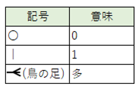
IE記法の記述例
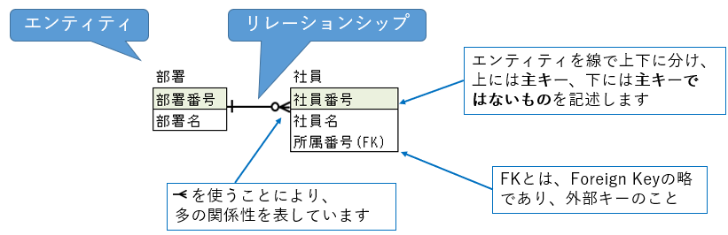
部署、社員という実体があり、部署と社員は「1 対 多」の関係性があるので、1つの部署には、複数の社員が所属していて、社員は、1つの部署に所属していることを表しています。
先に正規化の例で使用したテーブルをIE記法で表すと以下のようになります。
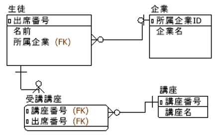
IDEF1X（Integration Definition）記法
米国標準技術研究所（NIST）が規格化した、データベースの設計に特化した表記方法です。
リレーションシップを「●」などで表現することが特徴です。
IE記法より細かい表現ができますが、その分IE記法に比べて直感的な分かりやすさは低くなります。
多重度は下記のように表現します。
| 記号 | 意味 |
|---|---|
| なし | 1 |
| ● | 0以上 |
| ●P | 1以上 |
| ●Z | 0または1 |
| ●N | 指定した数(Nは実数) |
| ●N-M | 指定した範囲数(N,Mは実数) |
| ◇ | 0または1 |
IDEF1X記法の記述例
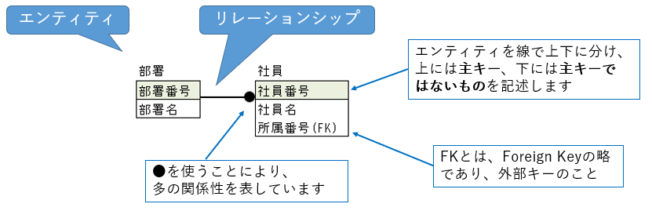
部署、社員という実体があり、部署と社員は「1 対 多」の関係性があるので、1つの部署には、複数の社員が所属していて、社員は、1つの部署に所属していることを表しています。
データ型の決定
利用するデータベースがまだ決まっていない段階では「文字列」型としておき、データベースが決まったら「VARCHAR」型のように、段階的に詳細に決定していくことになります。
| 講座番号 | 出席番号 | 生徒指名 |
|---|---|---|
| 101 | 1 | 佐藤太郎 |
| 101 | 2 | 鈴木次郎 |
| 102 | 1 | 坂田三郎 |
同じ種類のデータであったとしても、データベースによって用意されているデータ型は異なる場合があります。
例えば「文字列」型一つとっても、「VARCHAR2」や「nvarchar」、「VARCHAR」、「character varying」などさまざまです。
利用するデータベースがまだ決まっていない段階では「文字列」型としておき、データベースが決まったら「VARCHAR」型のように、段階的に詳細に決定していくことになります。
テーブル定義書
正規化を行いデータ型を定めたら設計書に起こします。
テーブル定義書のフォーマットは現場によって異なりますが、主に以下の内容を記載することになります。
- 論理名称
- 認識しやすい名称とし、日本語で付けることが多いです
- 物理名称
- 利用するデータベースのルールに合わせた名称とします
- データ型（桁数）
- 利用するデータベースで用意されているデータ型から決定します
- 桁数は、想定されるデータ全てを格納できるように設定します
- 制約
- 管理するデータの整合性が崩れないよう、適切な制約を設定します
テーブル設計の例
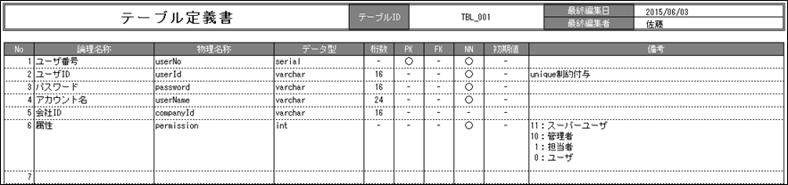
「ER図」と「テーブル定義書」がデータベース設計のアウトプットです。
実際の開発では一度作った後でも修正は入りますが、大事なことは作成した「データベース」と「設計書」がきちんと対応づいていることです。